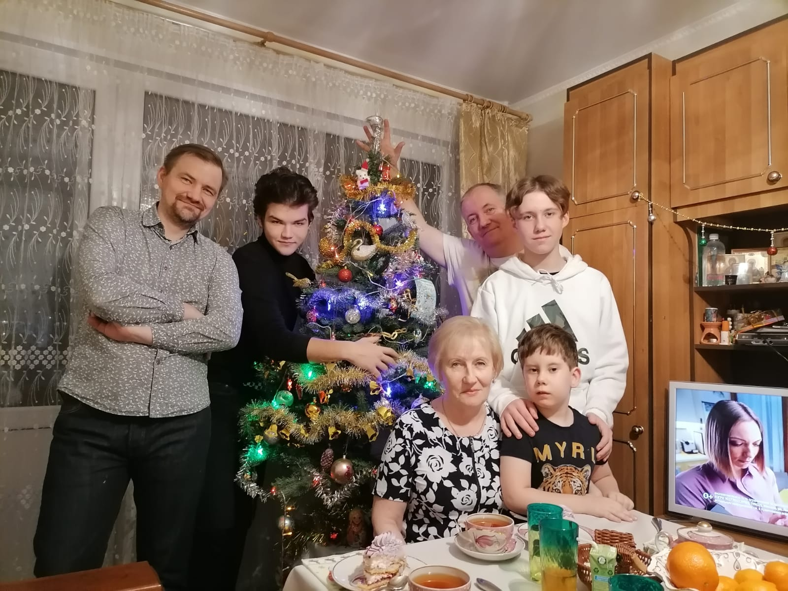

ТимофеевыиВоронцовы
История семьи: 14 поколений, 7150 человек и восемь фамилий — от крестьян Тверской губернии до наших дней.
Сегодня

Четыре века одной семьи
Синим отмечена линия отца, бордовым — линия мамы.
- 14поколений
- 7150человек в древе
- 8фамилий: Тимофеевы, Усачевы, Волковы, Лопатины, Воронцовы, Чекмаревы, Носовы, Галяевы
Ближайшие даты
Дни рождения, свадьбы и дни памяти.
Разделы архива
Начните с древа семьи или с одной из двух линий.